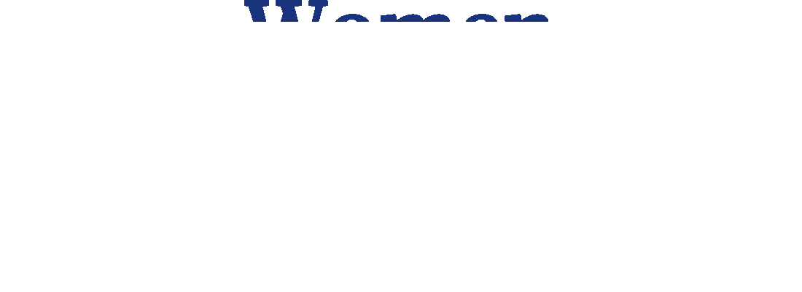

About March 8th
International Women's Day is celebrated on March 8th every year. It is a focal point in the movement for women's rights. After the Socialist Party of America organised a Women's Day on February 28, 1909 in New York, the 1910 International Socialist Woman's Conference suggested a Women's Day be held annually. The day was then predominantly celebrated by the socialist movement and communist countries until it was adopted in 1975 by the United Nations.
The day also commemorates the inspiring role of women around the world to secure women's rights & build more equitable societies. The goals include ending violence against women, and equality in the progress of women & women's rights.